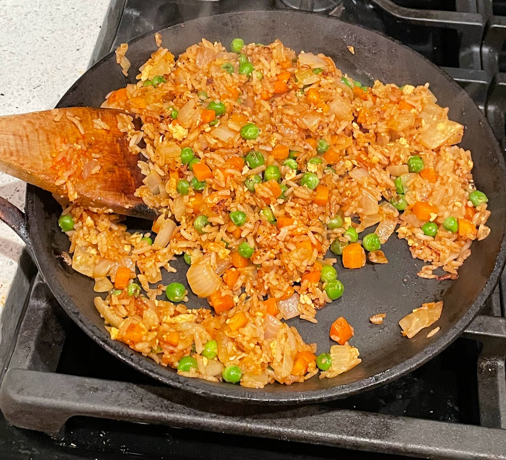

Fried rice

Fried rice.
Ingredients
- White rice
- Vegetable oil
- Sesame oil
- Onion
- Carrots
- Eggs
- Frozen peas
- Either Laoganma chili sauce or gochujang
- Soy sauce
- Oyster sauce
Instructions
A day or so in advance, cook some rice and leave it in the fridge until you're about to cook everything else.
Dice the onion and carrots. Toss vegetable oil and sesame oil into a large skillet and turn the heat to high. Once the oil is very hot, throw in the onion and carrots, then cook those (still at high heat) until they have softened. Move them to the side of the skillet and crack an egg or two on the other side and stir immediately. Once the egg is cooked, you can toss in everything else. Continue cooking until the rice has a nice texture and the peas taste like they're cooked through.
Serving suggestion
Eat as soon as it is done cooking, while the fried rice is still hot and aromatic.
Notes
The proportions for this dish are not at all precise, but some of the cooking methods are. Most importantly, you should stir frequently and you should no overcrowd the pan, because if the rice piles up in one place for too long, it will steam itself and get mushy. To make multiple servings worth of fried rice at once, consider cooking in batches or using two pans.